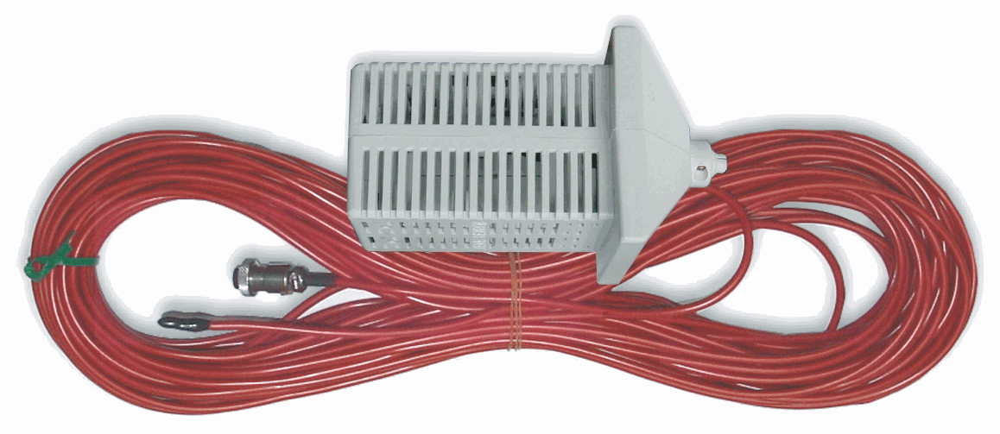
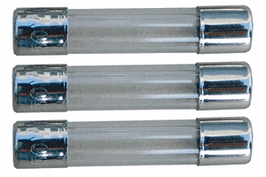
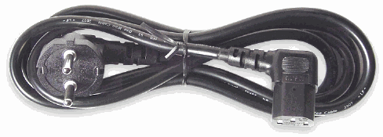
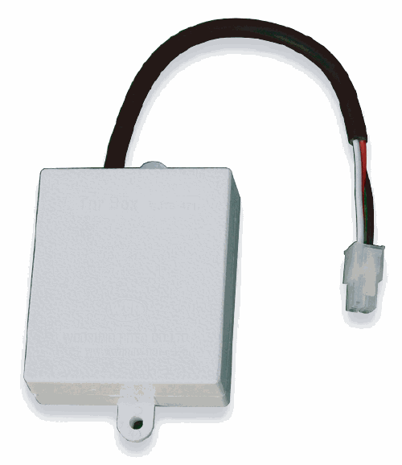
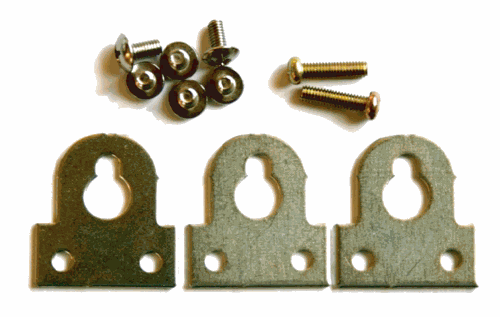
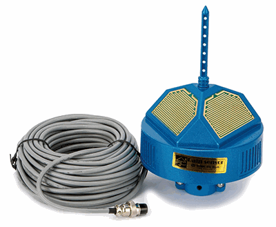

실내온도센서
코드길이 30m
단동하우스 양쪽 측창에 설치된 DC24V 전동개폐기 두 대를 좌·우 채널로 나누어 각각 다른 목표온도로 운전합니다.
실내온도는 공통으로 측정하고 좌측과 우측의 목표온도와 운전조건을 각각 적용합니다.
단동하우스 양쪽 측창에 50W급 전동개폐기를 한 대씩 설치하고, 좌우 목표온도를 다르게 설정해야 하는 시설에 적합합니다.
고출력형과 구분일반 YN-2는 채널당 2A 이하 모델입니다. 100W급 개폐기용 YN-2H와 출력 사양을 혼동하지 마십시오.
작동온도가 되면 연속으로 열거나 닫습니다.
사용자가 설정한 작동·대기시간을 반복합니다.
대기 중 온도 추세를 보고 다음 작동 여부를 판단합니다.
좌측 측창 전동개폐기는 좌측 채널, 우측 측창 전동개폐기는 우측 채널에 연결합니다. 좌우 목표온도와 작동·대기시간을 현장 조건에 맞게 각각 설정합니다.

코드길이 30m

출력회로 보호용

AC 전원 연결용

입력 과전압 보호

고정 브래킷·체결부품

빗물감지 특별 닫힘